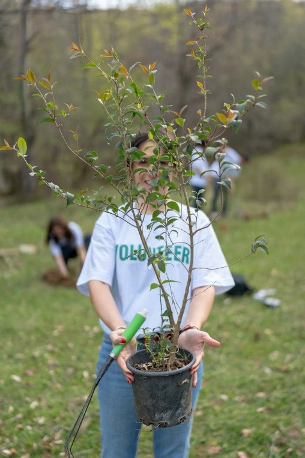
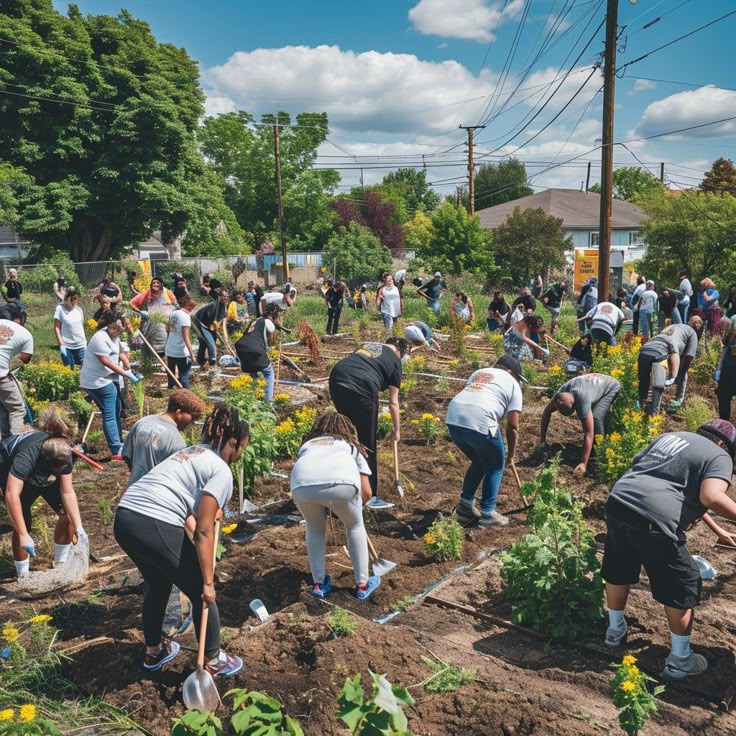

Germinar: Donde la vida vuelve a brotar.
Protegiendo la biodiversidad a través de la plantación estratégica de especies nativas y la educación ambiental en comunidades locales.
Convertí tu donación en un bosque
Convertimos tus donaciones en árboles plantados y monitoreados. Medí tu impacto ambiental y ayudanos a restaurar el equilibrio de nuestra tierra.
Ver masQUE HACEMOS
Transformamos tu compromiso en bosques vivos
Nacimos con la misión de revertir la degradación de nuestros suelos. A través de la ciencia aplicada y el trabajo comunitario, en Germinar diseñamos proyectos de restauración forestal que permiten a personas y empresas mitigar su huella de carbono de forma real, transparente y duradera. Tu donación es el motor que devuelve la vida a la tierra.
Ver mas
NUESTRAS ESTADÍSTICAS
ÁRBOLES PLANTADOS
PROYECTOS ACTIVOS
TONELADAS DE CO2
VIDAS IMPACTADAS
PROYECTOS EN MARCHA
Ecosistemas en recuperación

Restauración de Selva Misionera
Plantamos especies nativas para recuperar el corredor biológico y proteger la fauna local de la deforestación.
Ver mas
Bosques de Bolsillo en la Ciudad
Creamos micro-ecosistemas en zonas urbanas para bajar la temperatura de las calles y mejorar la calidad del aire.
Ver mas
Reforestación de Altura
Trabajamos en las laderas de los cerros para prevenir la erosión del suelo y proteger las cuencas de agua naturales.
Ver masVoces que ya están haciendo el cambio
Conocé las historias de los donantes y voluntarios que decidieron dejar de preocuparse por el clima para empezar a ocuparse.
Buscábamos una forma real y medible de compensar la huella de nuestra empresa. Con Germinar, no solo plantamos árboles, sino que podemos seguir el progreso del bosque en tiempo real. Es el socio ambiental que toda empresa moderna necesita.
Carlos Méndez
Director de Sustentabilidad en Tech
Siempre quise ayudar pero no sabía cómo estar segura de que mi dinero llegaba a la tierra. El sistema de transparencia de Germinar me dio esa confianza. Saber que hay un pedacito de bosque nativo creciendo por mí es una sensación increíble.
Lucía Fernández
Donante Mensual
Lo que más destaco de Germinar es su rigor técnico. No plantan por plantar; seleccionan especies nativas que realmente restauran el ecosistema local. Es una acción climática con base científica y mucho corazón.
Ing. Ricardo Paz
Consultor Ambiental
Participar en las jornadas de plantación cambió mi forma de ver el mundo. Ver a la comunidad unida poniendo las manos en la tierra te hace entender que el cambio climático se combate con acciones colectivas. ¡Germinar es familia!/p>
Martina Sosa
Voluntaria activa